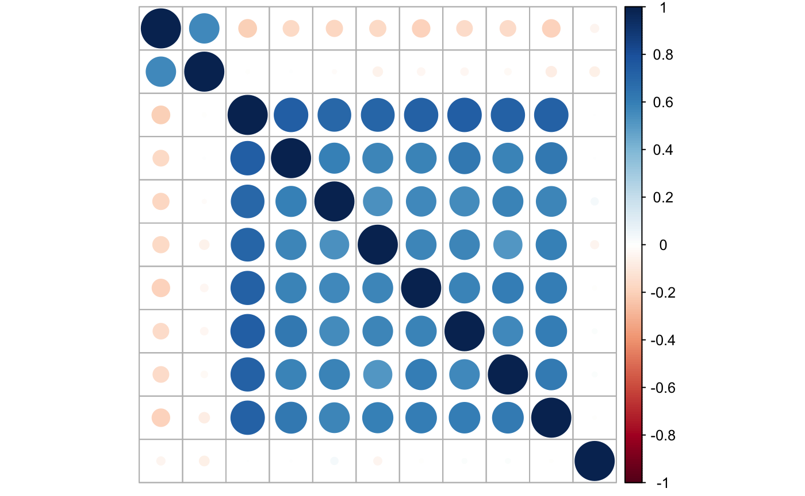
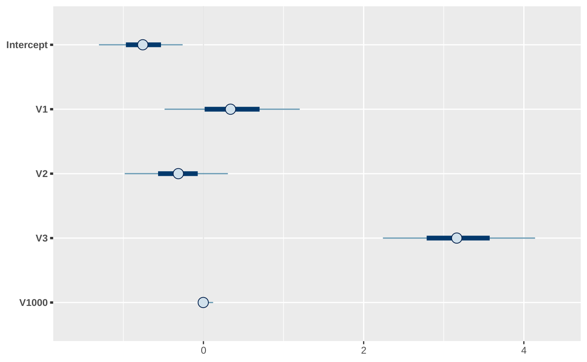
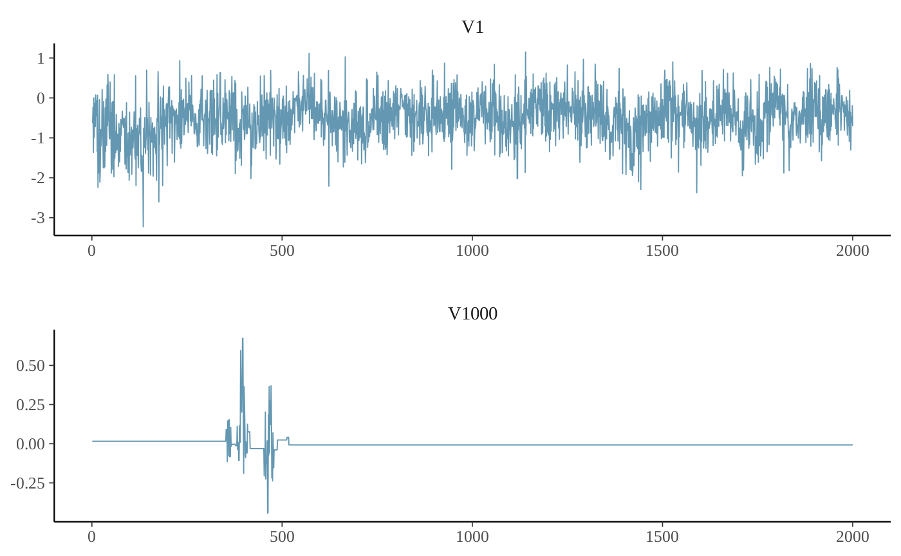
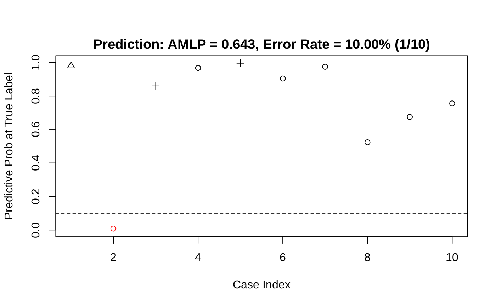

simu.RmdLoad the necessary libraries:
library(HTLR)
library(bayesplot)
#> This is bayesplot version 1.7.0
#> - Online documentation and vignettes at mc-stan.org/bayesplot
#> - bayesplot theme set to bayesplot::theme_default()
#> * Does _not_ affect other ggplot2 plots
#> * See ?bayesplot_theme_set for details on theme settingThe description of the dataset generating scheme is found from Li and Yao (2018).
There are 4 groups of features:
feature #1: marginally related feature
feature #2: marginally unrelated feature, but feature #2 is correlated with feature #1
feature #3 - #10: marginally related features and also internally correlated
feature #11 - #2000: noise features without relationship with the y
SEED <- 101
n <- 510
p <- 2000
means <- rbind(
c(0, 1, 0),
c(0, 0, 0),
c(0, 0, 1),
c(0, 0, 1),
c(0, 0, 1),
c(0, 0, 1),
c(0, 0, 1),
c(0, 0, 1),
c(0, 0, 1),
c(0, 0, 1)
) * 2
means <- rbind(means, matrix(0, p - 10, 3))
A <- diag(1, p)
A[1:10, 1:3] <-
rbind(
c(1, 0, 0),
c(2, 1, 0),
c(0, 0, 1),
c(0, 0, 1),
c(0, 0, 1),
c(0, 0, 1),
c(0, 0, 1),
c(0, 0, 1),
c(0, 0, 1),
c(0, 0, 1)
)
set.seed(SEED)
dat <- gendata_FAM(n, means, A, sd_g = 0.5, stdx = TRUE)
str(dat)
#> List of 4
#> $ X : num [1:510, 1:2000] -1.174 1.262 -0.752 -0.483 1.929 ...
#> ..- attr(*, "dimnames")=List of 2
#> .. ..$ : NULL
#> .. ..$ : chr [1:2000] "V1" "V2" "V3" "V4" ...
#> $ muj: num [1:2000, 1:3] -0.456 0 -0.456 -0.376 -0.376 ...
#> $ SGM: num [1:2000, 1:2000] 0.584 0.597 0 0 0 ...
#> $ y : int [1:510] 1 2 3 1 2 3 1 2 3 1 ...Look at the correlation between features:

Split the data into training and testing sets:
set.seed(SEED)
dat <- split_data(dat$X, dat$y, n.train = 500)
str(dat)
#> List of 4
#> $ x.tr: num [1:500, 1:2000] -0.2476 0.0789 -1.5571 1.1904 -0.8982 ...
#> ..- attr(*, "dimnames")=List of 2
#> .. ..$ : NULL
#> .. ..$ : chr [1:2000] "V1" "V2" "V3" "V4" ...
#> $ y.tr: int [1:500] 1 2 1 1 1 2 1 3 1 1 ...
#> $ x.te: num [1:10, 1:2000] 0.136 -0.634 -1.132 -0.283 0.188 ...
#> ..- attr(*, "dimnames")=List of 2
#> .. ..$ : NULL
#> .. ..$ : chr [1:2000] "V1" "V2" "V3" "V4" ...
#> $ y.te: int [1:10] 2 2 3 3 3 1 1 3 2 3Fit a HTLR model with all default settings:
set.seed(SEED)
system.time(
fit.t <- htlr(dat$x.tr, dat$y.tr)
)
#> user system elapsed
#> 120.500 0.106 22.018
print(fit.t)
#> Fitted HTLR model
#>
#> Data:
#>
#> response: 3-class
#> observations: 500
#> predictors: 2001 (w/ intercept)
#> standardised: TRUE
#>
#> Model:
#>
#> prior dist: t (df = 1, log(w) = -10.0)
#> init state: lasso
#> sample: 1000 (posterior sample size)
#>
#> Estimates:
#>
#> model size: 5 (w/ intercept)
#> coefficients: see help('summary.htlr.fit')With another configuration:
set.seed(SEED)
system.time(
fit.t2 <- htlr(X = dat$x.tr, y = dat$y.tr,
prior = htlr_prior("t", df = 1, logw = -20, sigmab0 = 1500),
iter = 4000, init = "bcbc")
)
#> user system elapsed
#> 194.383 0.332 34.165
print(fit.t2)
#> Fitted HTLR model
#>
#> Data:
#>
#> response: 3-class
#> observations: 500
#> predictors: 2001 (w/ intercept)
#> standardised: TRUE
#>
#> Model:
#>
#> prior dist: t (df = 1, log(w) = -20.0)
#> init state: bcbc
#> sample: 2000 (posterior sample size)
#>
#> Estimates:
#>
#> model size: 6 (w/ intercept)
#> coefficients: see help('summary.htlr.fit')Look at the point summaries of posterior of selected parameters:
summary(fit.t2, features = c(1:10, 100, 200, 1000, 2000), method = median)
#> class 2 class 3
#> Intercept -3.300316223 -1.9070412107
#> V1 10.350593648 -0.4020897215
#> V2 -6.277168943 0.1162428743
#> V3 0.104563626 3.0794342376
#> V4 -0.008132072 -0.0066356093
#> V5 -0.002126039 -0.0021705510
#> V6 0.003971248 0.0012639359
#> V7 -0.346893064 1.6136516173
#> V8 0.012365796 1.0173655539
#> V9 -0.004739610 0.0014478780
#> V10 0.006284849 -0.0008267156
#> V100 0.000832599 -0.0074730025
#> V200 0.002518865 0.0132492986
#> V1000 -0.011929868 -0.0138085483
#> V2000 -0.002381775 -0.0047217161
#> attr(,"stats")
#> [1] "median"Plot interval estimates from posterior draws using bayesplot:
post.t <- as.matrix(fit.t2, k = 2)
## signal parameters
mcmc_intervals(post.t, pars = c("Intercept", "V1", "V2", "V3", "V1000"))
Trace plot of MCMC draws:

The coefficient of unrelated features (noise) are not updated during some iterations due to restricted Gibbs sampling Li and Yao (2018), hence the computational cost is greatly reduced.
A glance at the prediction accuracy:
y.class <- predict(fit.t, dat$x.te, type = "class")
y.class
#> y.pred
#> [1,] 2
#> [2,] 2
#> [3,] 3
#> [4,] 3
#> [5,] 3
#> [6,] 1
#> [7,] 1
#> [8,] 3
#> [9,] 2
#> [10,] 3
print(paste0("prediction accuracy of model 1 = ",
sum(y.class == dat$y.te) / length(y.class)))
#> [1] "prediction accuracy of model 1 = 1"
y.class2 <- predict(fit.t2, dat$x.te, type = "class")
print(paste0("prediction accuracy of model 2 = ",
sum(y.class2 == dat$y.te) / length(y.class)))
#> [1] "prediction accuracy of model 2 = 1"More details about the prediction result:

#> $prob_at_truelabels
#> [1] 0.9835432 0.6796138 0.9995977 0.6352723 0.9041224 0.6537921 0.6312978
#> [8] 0.7955446 0.6207597 0.9705560
#>
#> $table_eval
#> Case ID True Label Pred. Prob 1 Pred. Prob 2 Pred. Prob 3 Wrong?
#> 1 1 2 0.0164547419 9.835432e-01 0.0000020499 0
#> 2 2 2 0.2441853060 6.796138e-01 0.0762008918 0
#> 3 3 3 0.0004023339 1.075147e-11 0.9995976660 0
#> 4 4 3 0.3512558309 1.347191e-02 0.6352722610 0
#> 5 5 3 0.0948079799 1.069570e-03 0.9041224500 0
#> 6 6 1 0.6537920838 3.934170e-02 0.3068662193 0
#> 7 7 1 0.6312978172 1.618725e-01 0.2068296840 0
#> 8 8 3 0.1994720269 4.983390e-03 0.7955445832 0
#> 9 9 2 0.3783598874 6.207597e-01 0.0008803816 0
#> 10 10 3 0.0294153288 2.868652e-05 0.9705559847 0
#>
#> $amlp
#> [1] 0.2578088
#>
#> $err_rate
#> [1] 0
#>
#> $which.wrong
#> integer(0)Li, Longhai, and Weixin Yao. 2018. “Fully Bayesian Logistic Regression with Hyper-Lasso Priors for High-Dimensional Feature Selection.” Journal of Statistical Computation and Simulation 88 (14). Taylor & Francis: 2827–51.